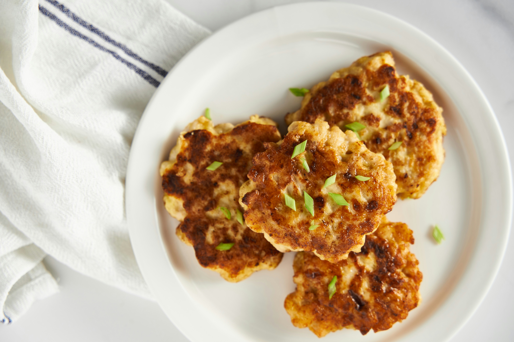

Back to Home
Potato Pancakes

Description
Potato Pancakes are a simple yet delicious dish made for everyone, especially the potato-lovers! They are quite the popular dish in many cultures from different countries, and can be enjoyed as a breakfast meal, afternoon snack, or side dish alongside a variety of main courses. This recipe offers a comforting and budget-friendly meal using common kitchen ingredients. The potatoes provide a naturally rich flavor, while the seasonings add depth to every bite. Potato pancakes are best enjoyed warm and can be paired with your favorite dipping sauces for added flavor.
| Prep Time |
10 mins |
| Cook Time |
15 mins |
| Total Time |
25 mins |
| Servings |
6 |
Ingredients:
- 4 large potatoes
- 1 yellow onion
- 1 large egg, beaten
- 1 teaspoon salt
- Freshly ground black pepper to taste
- 2 tablespoons all-purpose flour, or more as needed
- 1 cup vegetable oil for frying, or as needed
Steps:
- Preheat the oven to 200 degrees F (95 degrees C).
- Finely grate potatoes and onion into a large bowl. Drain off any excess liquid.
- Mix in egg, salt, and pepper. Add enough flour to make the mixture thick, about 2 to 4 tablespoons.
- Heat 1/4 inch of oil in the bottom of a heavy skillet over medium-high heat. Drop 1/4-cup mounds of batter, two or three at a time, into hot oil and flatten with the back of a spatula to make 1/2-inch-thick pancakes.
- Fry, turning pancakes once, until golden brown and crisp.
- Transfer to a paper towel-lined plate to drain. Keep warm in the preheated oven until ready to serve.
- Repeat until all potato mixture is used.
What did you think of this recipe? Tell us about it!